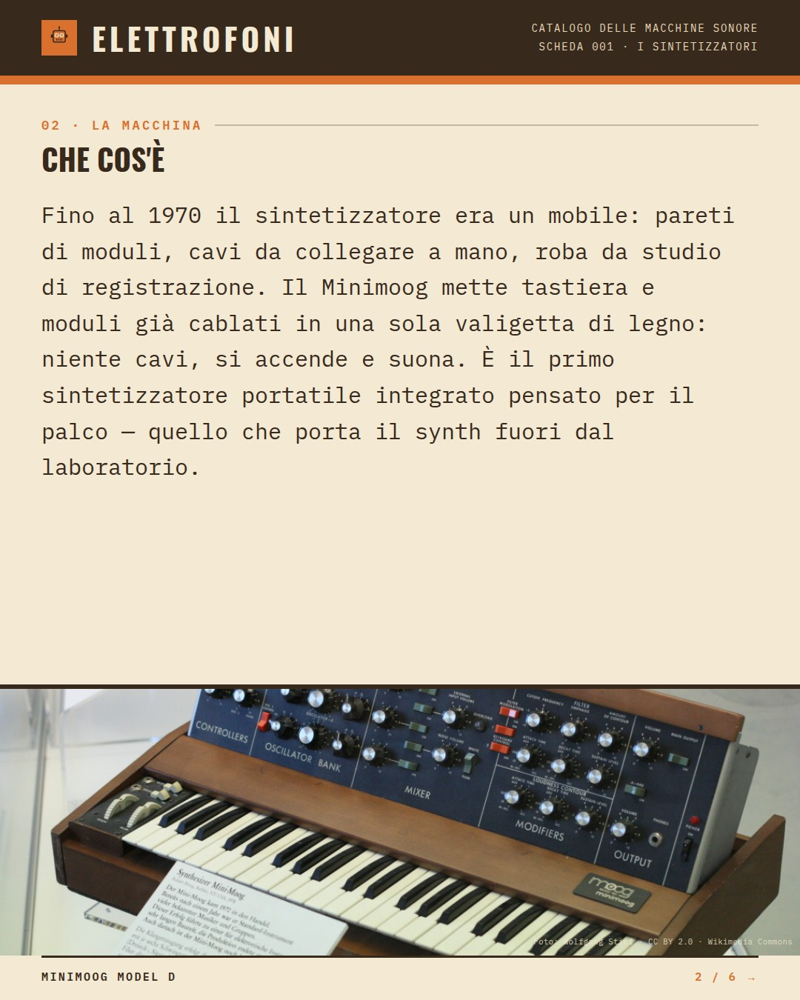
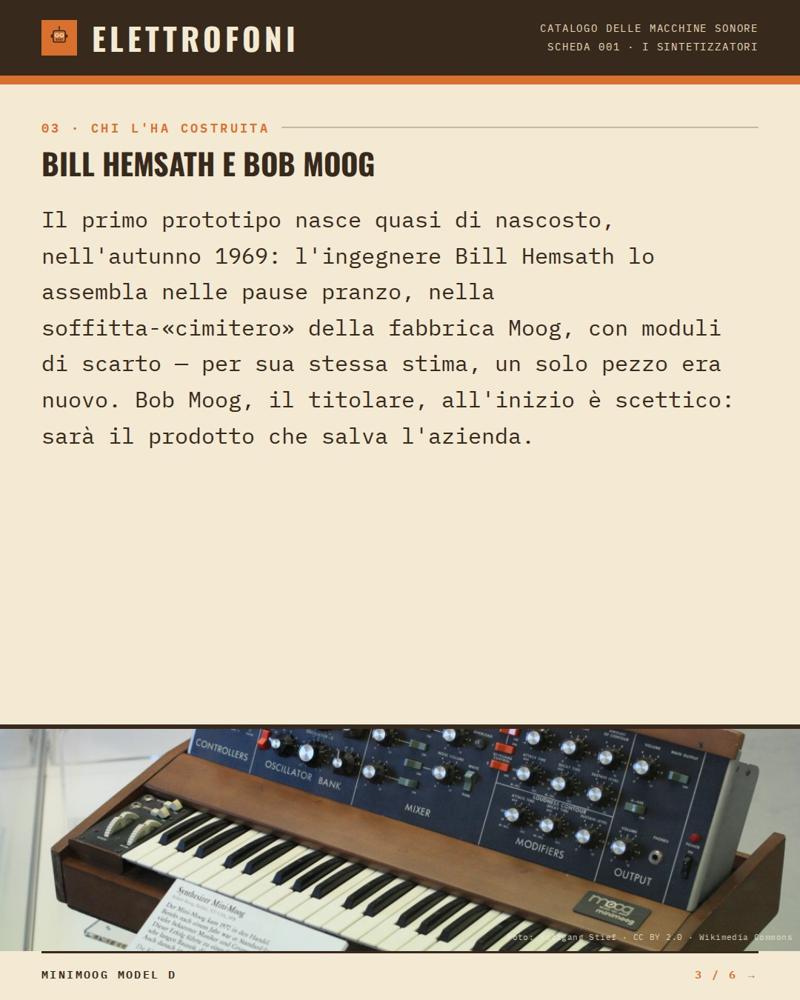
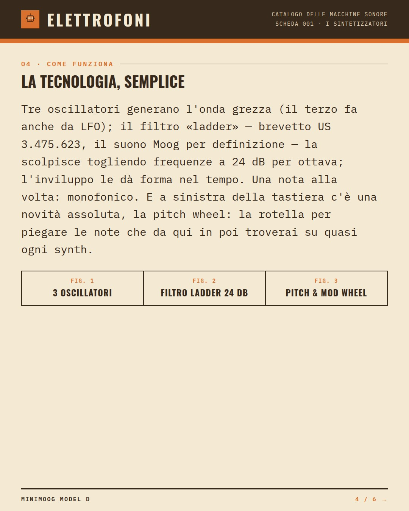
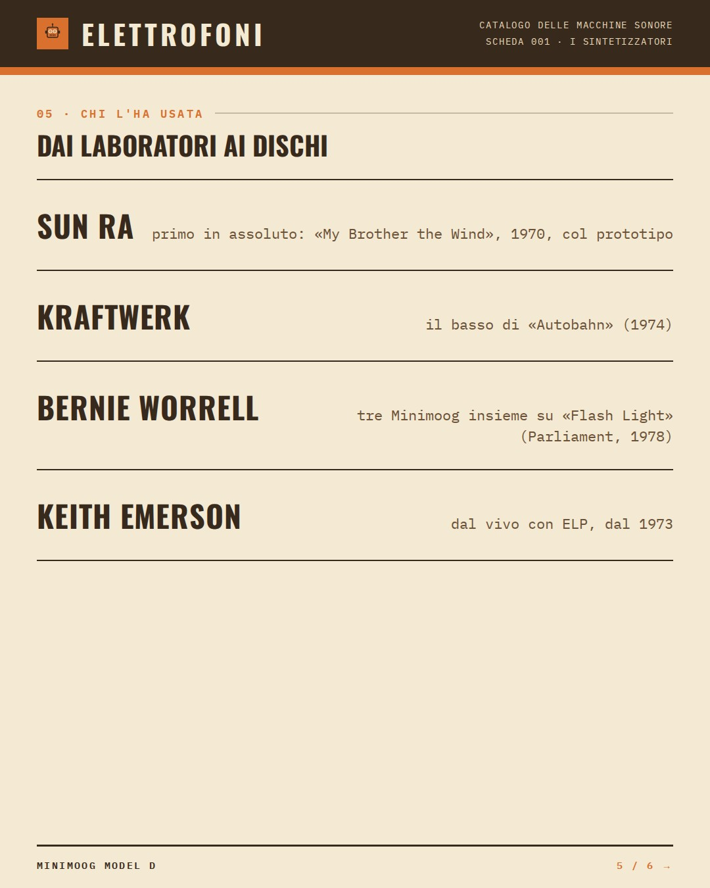
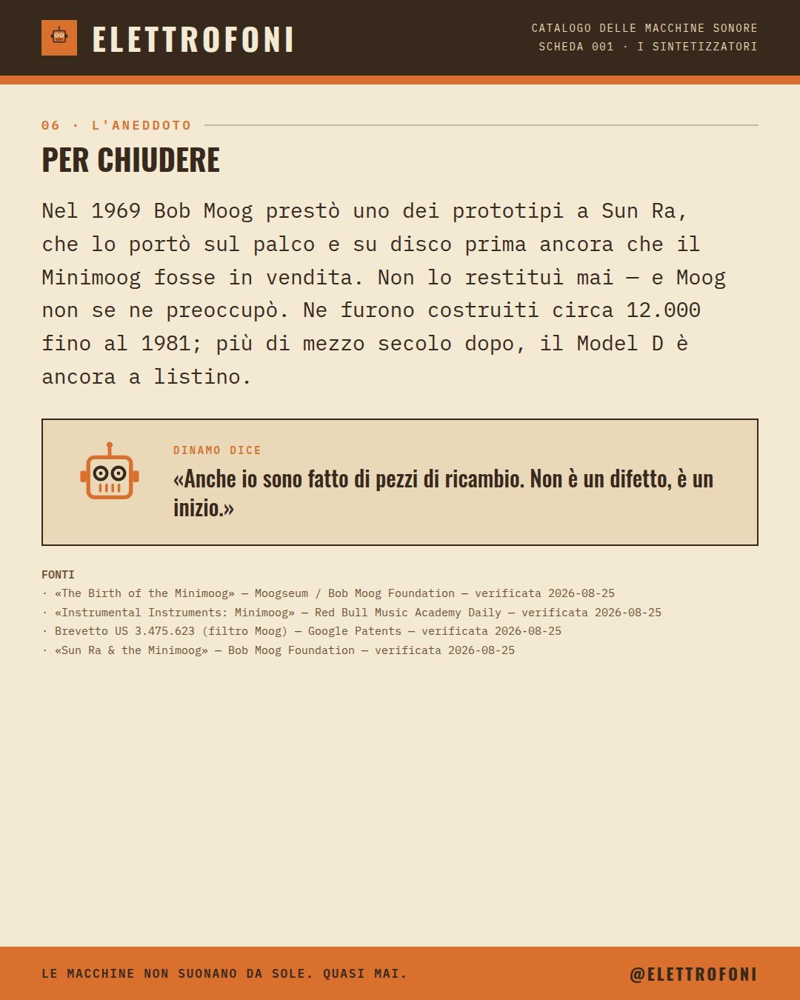

Minimoog Model D
Prima di lui, per suonare un synth serviva una parete intera
Il primo sintetizzatore che uscì dal laboratorio e salì su un palco.
VEDI IL POST SU INSTAGRAM →- ANNO
- 1970
- COSTRUTTORE
- R.A. Moog Inc.
- SINTESI
- Sottrattiva
- VOCI
- Monofonico
Che cos'è
Fino al 1970 il sintetizzatore era un mobile: pareti di moduli, cavi da collegare a mano, roba da studio di registrazione. Il Minimoog mette tastiera e moduli già cablati in una sola valigetta di legno: niente cavi, si accende e suona. È il primo sintetizzatore portatile integrato pensato per il palco — quello che porta il synth fuori dal laboratorio.
Chi l'ha costruita: Bill Hemsath e Bob Moog
Il primo prototipo nasce quasi di nascosto, nell'autunno 1969: l'ingegnere Bill Hemsath lo assembla nelle pause pranzo, nella soffitta-«cimitero» della fabbrica Moog, con moduli di scarto — per sua stessa stima, un solo pezzo era nuovo. Bob Moog, il titolare, all'inizio è scettico: sarà il prodotto che salva l'azienda.
Come funziona
Tre oscillatori generano l'onda grezza (il terzo fa anche da LFO); il filtro «ladder» — brevetto US 3.475.623, il suono Moog per definizione — la scolpisce togliendo frequenze a 24 dB per ottava; l'inviluppo le dà forma nel tempo. Una nota alla volta: monofonico. E a sinistra della tastiera c'è una novità assoluta, la pitch wheel: la rotella per piegare le note che da qui in poi troverai su quasi ogni synth.
Chi l'ha usata
- Sun Ra — primo in assoluto: «My Brother the Wind», 1970, col prototipo
- Kraftwerk — il basso di «Autobahn» (1974)
- Bernie Worrell — tre Minimoog insieme su «Flash Light» (Parliament, 1978)
- Keith Emerson — dal vivo con ELP, dal 1973
L'aneddoto
Nel 1969 Bob Moog prestò uno dei prototipi a Sun Ra, che lo portò sul palco e su disco prima ancora che il Minimoog fosse in vendita. Non lo restituì mai — e Moog non se ne preoccupò. Ne furono costruiti circa 12.000 fino al 1981; più di mezzo secolo dopo, il Model D è ancora a listino.
Dinamo dice«Anche io sono fatto di pezzi di ricambio. Non è un difetto, è un inizio.»






Fonti
- «The Birth of the Minimoog» — Moogseum / Bob Moog Foundation verificata il 2026-08-25
- «Instrumental Instruments: Minimoog» — Red Bull Music Academy Daily verificata il 2026-08-25
- Brevetto US 3.475.623 (filtro Moog) — Google Patents verificata il 2026-08-25
- «Sun Ra & the Minimoog» — Bob Moog Foundation verificata il 2026-08-25
Foto: Wolfgang Stief · CC BY 2.0 · Wikimedia Commons